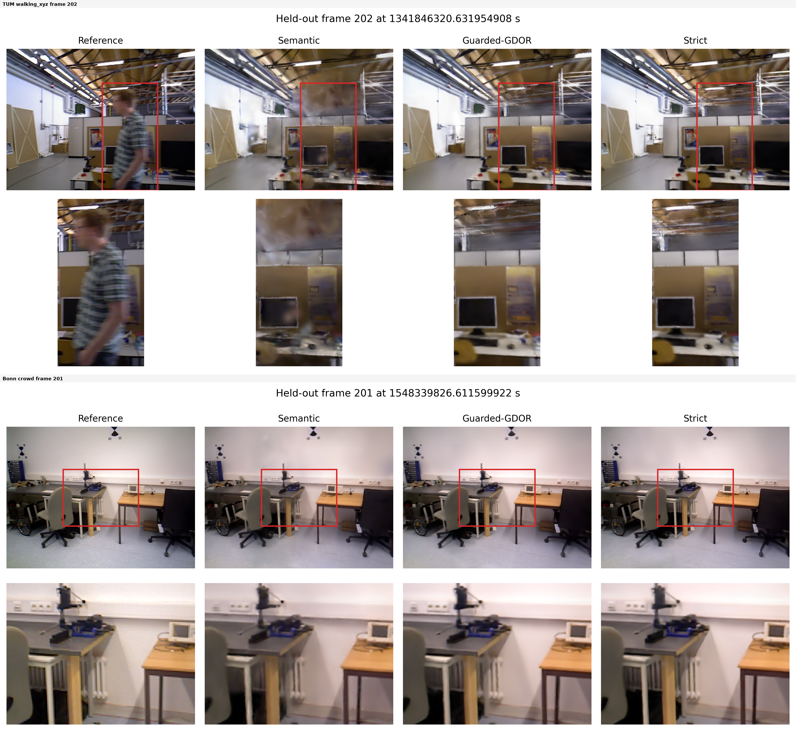
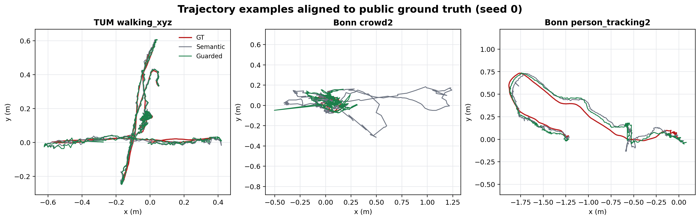

Main tracking
Semantic、MapMatched、Full；10 sequences；3 seeds。
3 configs × 10 seq × 3 seedsDynamic RGB-D Gaussian SLAM · Project Briefing
通过保守的动态观测恢复提升相机跟踪，同时将恢复证据隔离在瞬态 tracking 路径之外，避免其获得持久 Gaussian map 写入资格。
核心收益集中在 tracking failure regime。结论不是所有序列统一领先，而是在高风险动态片段中恢复足够的背景支持，同时保持持久地图路由隔离。
GDOR 将动态区域从“一律丢弃”改为有条件、瞬态、可审计的 tracking 支持，并通过 overlap certificate 检查恢复支持是否泄漏到 persistent mapping。

恢复观测是否能帮助当前相机估计，与它是否能进入长期地图，是两个独立决策。
语义 mask 提供高召回动态区域；默认仍为排除状态。
temporal depth、flow、risk、camera motion 与 adaptive FAST 共同决定当前 tracking 支持。
恢复像素不获得 Gaussian 初始化、更新、densification 或持久写入资格。
实验矩阵已完整执行，并将主 tracking、机制诊断和 mapping preservation 分开报告。
Semantic、MapMatched、Full；10 sequences；3 seeds。
3 configs × 10 seq × 3 seeds四个机制配置；10 sequences；3 seeds；按固定顺序增量。
4 configs × 10 seq × 3 seeds4 scenes；3 seeds；3 configs；online / GT-aligned poses。
4 × 3 × 3 × 2 pose modestum_sitting_halfsphere 已进入 main 和 mechanism denominator，并承担 MapMatched failure-regime rescue 的关键检验。
主结果同时给出 mean、paired median gain、cell W/T/L、sequence-mean W/T/L 和最强 failure-case；不只展示平均提升。
ATE RMSE，单位 cm，越低越好。以下所有比较均为 DYN-19 同源、同协议本地结果。
Bonn crowd2：42.500 → 11.080 cm。主导 Full 对 Semantic 的最强失败恢复。
TUM sitting_halfsphere：36.775 → 4.864 cm。该收益不是序列级普遍胜出。
| Comparison | Mean ATE | Full mean | Paired median gain | Cell W/T/L | Sequence W/T/L |
|---|---|---|---|---|---|
| Semantic → Full | 10.119 | 4.930 | +0.213 | 19 / 0 / 11 | 7 / 0 / 3 |
| MapMatched → Full | 7.392 | 4.930 | +0.016 | 16 / 0 / 14 | 4 / 0 / 6 |
Reading rule：平均值下降显著，但 paired median 和 sequence W/T/L 表明收益集中于失败区间。准确结论是“failure-regime rescue”，不是“uniform improvement”。

相邻配置按顺序添加机制，但结果非单调；因此不能从该设计声称 temporal depth、flow、risk、adaptive FAST 或 mapping weight 的独立效应与 interaction。
| Factor | Role | 当前证据能说什么 | 当前证据不能说什么 |
|---|---|---|---|
| T · Temporal depth | 跨帧背景支持 | 加入固定 bundle 后的相邻结果 | 独立 main effect |
| F · Residual flow | 独立运动拒绝 | ordered contrast | 与 T/R/A/M 的 interaction |
| R · Risk gate | 高风险恢复抑制 | bundle-level behavior | 单因素因果增益 |
| A · Adaptive FAST | 恢复特征预算 | Full 路径整体结果 | 独立归因 |
| M · Mapping route | 持久写入隔离 | certificate counterfactual | 仅凭 ATE 判断地图安全 |
主实验中恢复支持未观察到 persistent mapping leak，声明的 route invariant 通过。
关闭 mapping 隔离后，90,790,462 个 recovered-support pixels 被准入持久地图；证书按设计失败。
四场景、三 seed、同一 mapping views 与两种 pose modes。PSNR 是静态视角渲染诊断；ghost-risk 和 completeness 字段仍是 proxy。
| Comparison | Mean gain | Paired median gain | W/T/L | Interpretation |
|---|---|---|---|---|
| Full vs Semantic | +0.897 dB | +0.544 dB | 9 / 0 / 3 | 有限 static preservation 改善 |
| Full vs MapMatched | +0.773 dB | +0.515 dB | 11 / 0 / 1 | 有限 static preservation 改善 |
这些结果不能替代独立人工标注或外部真值，不应改写为“零 ghost”“零污染”或“完整背景已证明”。


汇报中的每个数字都应回到 public CSV、release manifest、certificate 或固定图像；外部论文数字仅作为 source-reported context。
公开仓库保存源码、聚合结果、图表、验证脚本、manifest 与 SHA-256；大体积原始实验根目录按 provenance 和保留策略管理。
paper/GDOR-SLAM_TMM_v5r6_preprint.pdf
LaTeX 源码正文、章节、参考文献与图表入口paper/main.tex
Evidence manifest协议、claim boundary 与证据类型paper/EVIDENCE_MANIFEST.md
Evidence validation重新计算 means、medians、W/T/L 与 certificate totalspaper/reports/evidence_validation.json
DyPho / FlowParse 风格表格Tracking、ordered ablation、runtime 与 mapping previewflowparse_paper_tables.html
交互式结果面板从公开 CSV 加载 tracking、mapping 与 mechanism 数据flowparse_dashboard.html
Traceability record仓库、branch/ref、commit 与原始数据边界TRACEABILITY.md
SHA-256 清单公开论文与证据文件的完整性记录paper/SHA256SUMS
DYN-19 GitHub release90 main、120 mechanism、72 mapping 的发布归档dyn19-results-20260914

GDOR-SLAM 的贡献是把动态区域中的可用背景证据，转化为受门控、瞬态且有 certificate 的恢复路径。
准确结论：同源本地 DYN-19 证据支持 guarded recovery、failure-regime rescue 与 separate tracking/mapping routing。它不构成官方 DyPho-SLAM 协议匹配优越性、独立模块因果效应或零 ghost 污染证明。